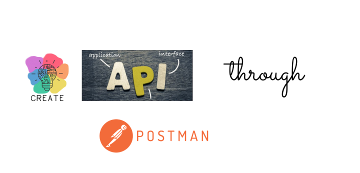
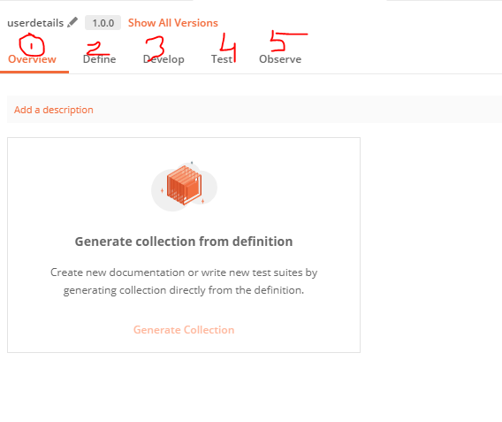
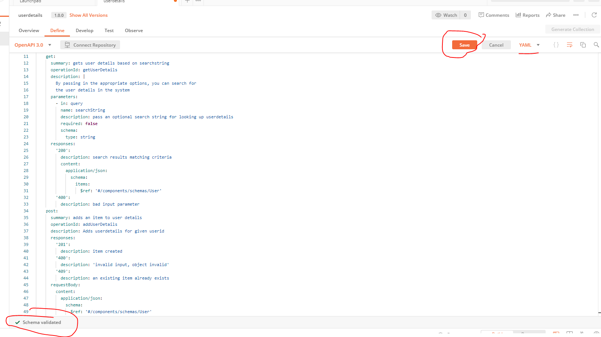
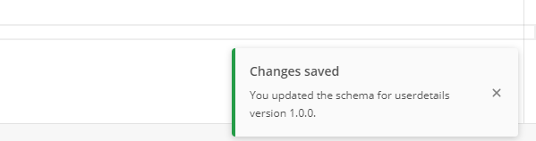
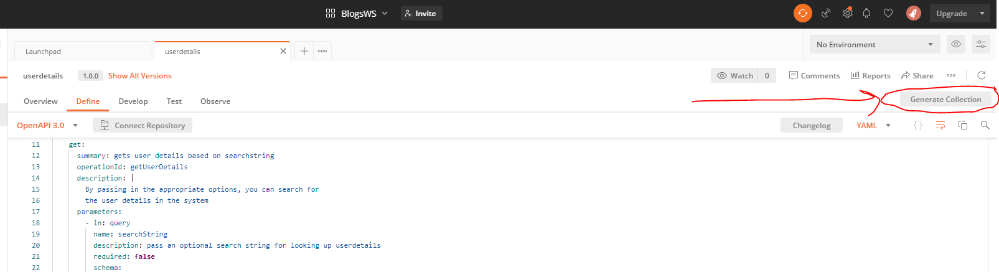
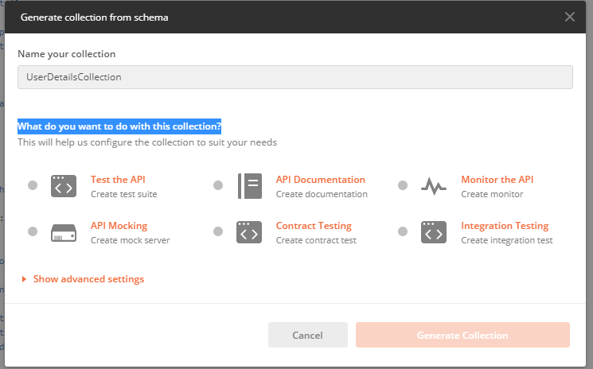
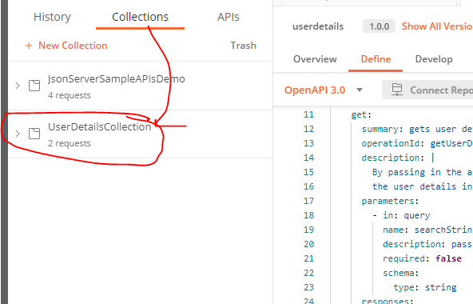
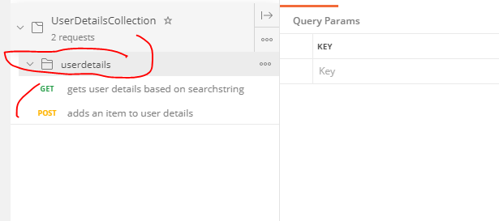
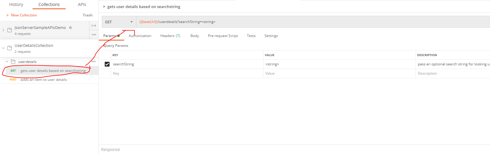

Postman- creating API's 16th Feb 2021
In this blog, we will learn how we can create API's through Postman
Creating API's
With Postman's version 7.1, they have introduced the most exciting feature in the API development and testing industry, i.e, the ability to create an API in Postman itself. This feature is very handy for testing and development purposes. In this tutorial, we will learn how to create an API in Postman.
If you are completely new to Postman then I have a complete
Postman tutorial. It's a series of 6 videos and hope that will be
helpful
Schema support for API creation in Postman
Postman has this feature where in you can create APIs.While creating API's you can also create the API schema.A schema in general is a computer science term which means an outline,blueprint or a layout of something.
I have a separate blog on what is API and
what is API Schema.Links below
1) What are API's
2) What is API schema afterall
In Postman terms, schema, like I said above, means creating the
structure of the API. i.e to say, what parameters and different
values it will take and contain. With the schema support in
Postman, user can
create their APIs, edit the APIs, or import the schema from outside Postman. (say you created a schema using Swagger and
then you have the schema on your local machine).
The most
important purpose for using the schema support is that the user
can escape the usage of different tools to perform these
operations. Postman can be used as a single software for all of
the tasks like a one-stop shop for all. There is support for RAML,
WADL, and OpenAPI types.
API tab in Postman and creating an API
-
Point 1) The new "APIs" tab exists next to
History and Collections tab. Image for referece
below

Ensure that you are signed in to use the APIs tab. If you are not signed in you will see API tab is disabled for you.Therefore, create an account in Postman and sign in succesfully.
Click on "+ New API" to create a new API -
Point 2) Clicking on the "+ New API" will open up a new
modal where in you can enter details

If you notice above, I entered the api name as userdetails, gave it a version (eg 1.0.0), chose schema type and schema format.
I select YAML as Schema Format for this eg . If you have an API schema already you can import it here using " select file ".For now, i will proceed without selecting any file.Click on Create. - Point 3) Now you will see a workspace that contains tons of options. I will just talk about the 5 tabs you see below 
- Point 4) All the tabs we see above help to create a complete API.Each tab has it's own purpose and help developers or testers at certain points in lifecycle of Software Development
Now let's understand about how and what each tab does for us
-
Define tab) The first option
holds the schema of the API. By default, you will see a
schema is created for you.I will share the schema related with
userdetails API. But default schema provided is good enough as a
starting point, you know,for your reference.We will see the
userdetails schema in the next section subsequently.

-
Develop tab) This option provides
additional API features . Through this option, a user
can add the endpoint to the mock server, create and publish
documentation for the API. And to add to above all, the user can
also play with the environment to switch between different
setups without changing the request.

-
Test tab) This tab provides a
variety of testing options for the tester .Good testing
is the base of any good product.Testing ensures that you develop
a spotless and great API.It includes creating a new test suite
to test the API behaviour, performing integration testing on the
API to check if the API works well with the other
applications.You can even write contract tests to make
sure that the API works according to its specifications.

- Observe tab) This tab allows you to monitor the performance of your API. You can use various conditions and intervals with the help of the Postman Monitors.
All in all, above tabs are quite handy for developing a
complete API and can be customized according to your need.
Now, let's take our userdetails api we created above forward.
Creating an API in Postman
In this section, we will see how to create a API in Postman. So if
you scroll above, in Point 2, I created a
userdetails api. For this tutorial, I have created an API
specification for your use using Swagger.I have put the schema for
your use in my github link.
user details schema.You can download userdetailsapischema file and copy the
contents and paste it in define tab .
Above schema is based on OpenAPI scpecifications. OpenAPI
scpecification is a separate topic all together and I may cover it
in a separate blog in future.For this tutorial, I will just
describe what the userdetailsapischema depicts. Basically,
through this schema we are telling that we have a:
- userdetails API
- This API supports two HTTP Verbs, namely the GET and a POST
- GET allows you to search based on a searchString query parameter.
- GET can either return a 200 wherein it returns the User object based on the search string entered OR a 400 response which means bad input parameter
- POST can either return a 201,400 or a 409. A successful POST (i.e response 201) means user details entry is created.If response is 400 or a 409 that means POST is unsuccessful.
-
I have copied the userdetailsapi schema in the Define
tab.Once you copy, verify if schema is validated like shown in
image below(green tick mark).Also ensure that you Save it
and select appropriate standard/format. YAML in this case

-
Once you save, you will get a notification as shown below
 - Now, in order to work upon this API, you need a collection. Postman Collections are a group of saved requests you can organize into folders.Thankfully, Postman does that with just a click of a button. To generate the collection, click on Generate Collection. 
-
Give any name of your choice (which makes sense ofcourse) to the
collecion and click on generate collection. I name it
UserDetailsCollection.You also need to enter
What do you want to do with this collection? . I
selected for "API Mocking" and then selected
Generate Collection button .Now it will also ask you to
enter the mockserver name

I have a separte blog on Postman Mockserver.The blog actually covers differences between Postman Mock server and JSON server.Link below
Postman Mock Server -
Go to the Collections tab and you will see your collection
 -
When you expand your collection,and then click the
userdetails API you will see 2 requests. One each for
GET and for POST

-
In the builder section of Postman, the API will be designed for
you with the parameters shown.Same way you can see for
POST as well

Conclusion.
To conclude,we can say that using this approach we can create a new API within minutes. We also created a mock server. Through mock server one can also achieve Dummy responses (Develop Section). Postman in a way is gaining momentum because it has become kind of one stop shop and is kind of a complete package from where users can design,create an API and deploy it in mock server.
And that's it. Hope you undertood how to customize JSON server. .Email me at "techspacedeck@gmail.com" incase you have queries. Alternatively, you can fill the "CONTACT" form or drop a comment below